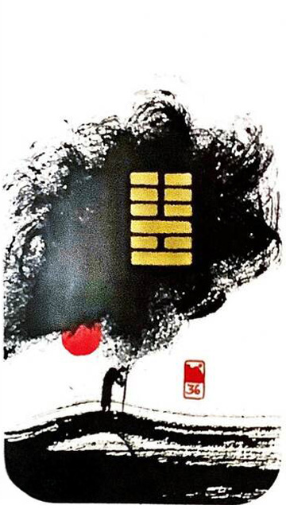

지화명이 (밝을 명.상할 이)
대흉괘 7
빛이 사라져 암흑속에 파묻히다
밝음이 상하고 깨진다.위태로움과 손상함아무것도 할 수 없는 칠흑같은 어둠갈 길은 먼데 움직일 수 없어 막막하고 답답한 상황을 표현한 그림수행이나 공부하는 사람은 괜찮다
빛이 깨짐.어둠.어려움.답답.혼란.위태로움.난처함.불리함.최대한 자중.먹구름.힘든 상황.외부적인 상황의 영향을 받음.
연애운
냉전상황.불화.불신.환경적인 어려움.실연.배신
사업운
뜻대로 되지 않음.눈 앞이 캄캄해지는 일이 생김
속마음
썸막막하고 답답한 마음
1년 이상냉전상황.불신하는 마음
이별 후이별한거 생각하면 힘들고 어찌할 지 모르는 막막하고 답답한 마음
솔로연애운
새로운 이성 생길 확률 낮다
건강운
시력감퇴.심장병.신경쇠약.소화기 계통의 질병주의. 면역력 떨어짐